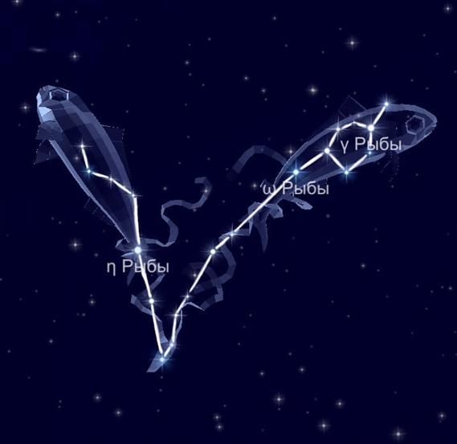

Из-за расположения между Овном и Водолеем, его часто подразделяют на северную и западную части. Первая находится под Андромедой, а вторая в области между Пегасом и Водолеем. На самом деле, это два астеризма.
Миф о происхождении.
Однажды появилось ужасное огнедышащее рожденное землей чудовище Тифон, один вид которого заставил всех богов разбежаться в разные стороны. Юпитер превратил себя в барана, Меркурий стал ибисом, Аполлон принял форму ворона, Диана скрыла себя под обличьем кошки, Вакх превратился в козла. Венера и ее сын Купидон купались в реке Евфрат в этот день и, спасаясь, превратились в рыб. Позднее Минерва увековечила это событие, поместив изображения двух рыб среди звезд.
Звёзды, образующие созвездие Рыбы.
К удивлению, в созвездии отсутствует ярчайшая звезда.
Al Pherg (Kullat Nunu) считается первой звездой рассматриваемого участка. Между прочим, её свет сильнее солнечного более чем в 300 раз. Но удалённость Куллат Нуну на 294 световых года делает её для земного наблюдателя обычной точкой на звёздном небе.
Альфа-Альриша является началом Рыб. Омега это двойная звезда.
Гамма-жёлтый гигант, вдобавок, является вторым по яркости.
ТХ Рыб-углеродная звезда. Интересно, что имеет тёмный красный цвет.
Йота представляет собой жёлтый карлик. Признаться, разделяет нас всего 45 световых лет.
Бета, наоборот, самая дальняя от нашей планеты звезда.
По правде, самым ближайшим для нас является звезда ван Маанена.
В северном полушарии его можно наблюдать в осеннее время. Искать его нужно между Водолеем и Овном.
|

|